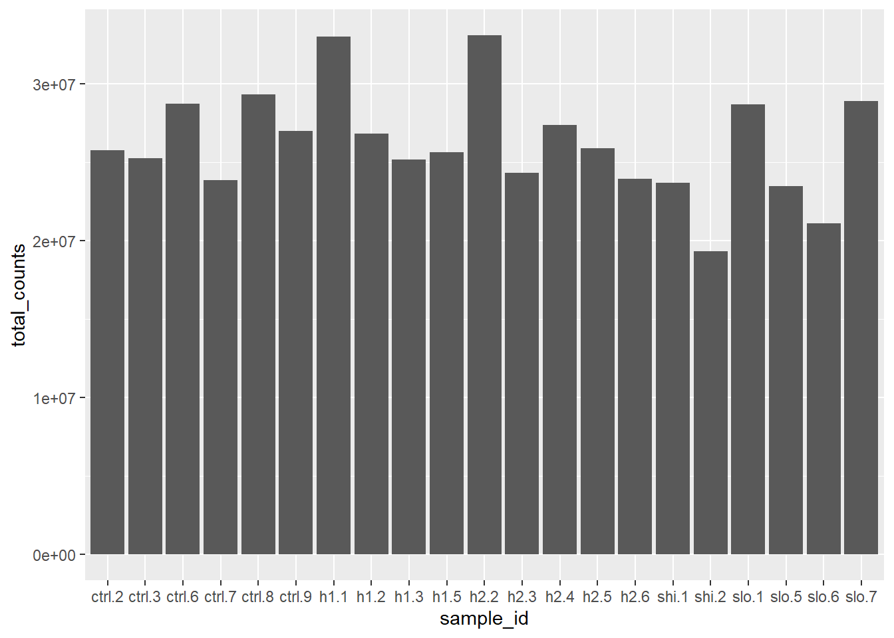
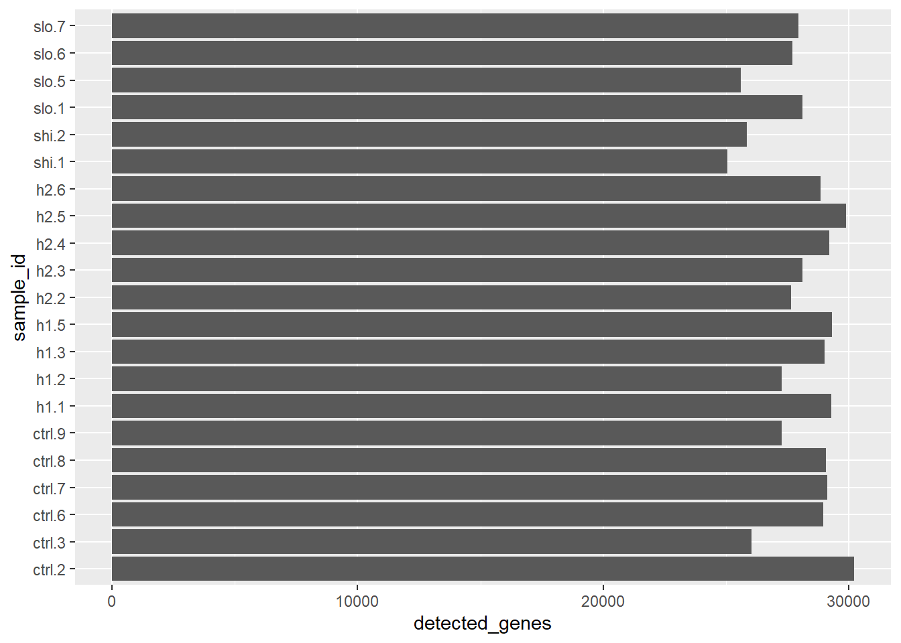

# Import sample information
sample_info <- read.csv(
"m_sample_info.csv",
header = TRUE,
row.names = 1
)
# Import counts and convert them to a numeric matrix
count_data <- read.csv(
"m_sample_counts.csv",
header = TRUE,
row.names = 1
)
count_data <- as.matrix(count_data)3 Sample-Level Summaries and Visualisation
3.1 What you’ll learn
In Chapter 2, we imported the RNA-seq count data and sample information, checked that the samples were correctly aligned and learned how to select values from these objects.
In this chapter, you will use those skills to calculate a single summary value for each sample. You will combine these summaries with the sample information and create your first plot using ggplot2. This provides an initial comparison of sequencing depth across samples before differential-expression analysis.
NoteLearning outcomes
By the end of this chapter, you should be able to:
- calculate the total number of counts in each sample using
colSums() - combine sample identifiers, biological information and calculated values in a data frame
- create a basic bar chart using
ggplot2 - explain how layers are added to a
ggplot2plot - interpret differences in library size as an initial quality-control measure
- save a plot to the project output folders
- calculate and interpret the proportion of genes with zero counts in one sample
ISCB alignment: B3 (prepare and summarise life-science data for computational analysis), D3 (use a sample-level summary to identify data that may require further investigation), E3 (manage derived tables and figures within a reproducible folder structure), F3 (interpret library-size differences in their biological and technical context), H3 (use basic R functions, construct data frames and create plots using ggplot2).
3.2 Continuing the analysis from Chapter 2
Open the same RStudio Project and the HAT_analysis.R script used in Chapter 2. Add the new code from this chapter below your existing code so that the script remains a reproducible record of the analysis.
If you have restarted R, rerun your script from the beginning. This should ensure that count_data and sample_info are loaded and have the correct object types.
TipRecap: Essential setup code
The following code recreates the objects needed in this chapter. You should already have most of it in your script from Chapter 2.
3.3 Sample quality metrics
Before differential-expression analysis, we will calculate the total number of counts in each sample. This provides an initial overview of sequencing depth and can identify samples with substantially more or fewer counts than the others. It does not determine whether a sample should be removed, but it can identify samples that merit further investigation.
Garbage In, Garbage Out
3.3.1 Creating a sample-summary table
We already have the information needed to create sample-level summaries, but it is spread across two objects:
count_datacontains the gene counts for each samplesample_infocontains information describing each sample
We can use indexing and subsetting to combine selected information from these objects into a new data frame called sample_summary.
In this new table:
- each row will represent one sample
- each column will contain a different piece of information about that sample
Because the rows of sample_info are already in the same order as the columns of count_data, the first total count can be safely combined with the first metadata row, the second with the second, and so on. This is why it was important to check the order was identical.
Calculate the sample summaries
First, we will calculate the total number of counts in each sample.
3.3.1.1 Total counts
Because each column of count_data represents one sample, we can use the R function colSums() to calculate the total number of counts in each sample and store it as a vector (a vector is just a collection of values stored in a particular order):
total_counts <- colSums(count_data)
total_counts h1.1 h1.2 h1.3 h1.5 h2.2 h2.3 h2.4 h2.5
33006582 26836411 25185951 25640193 33085881 24336818 27354946 25878192
h2.6 shi.1 shi.2 slo.1 slo.5 slo.6 slo.7 ctrl.2
23931262 23679611 19319607 28703914 23477956 21106464 28895003 25778199
ctrl.3 ctrl.6 ctrl.7 ctrl.8 ctrl.9
25244807 28741458 23853634 29319359 27009012 In this analysis, we will use the total assigned count for each sample as its library size. Library size is important because samples with more counts generally provide more information about gene expression than samples with fewer counts. Large differences between samples may reflect differences in sequencing depth or sample quality, so library size is an important measure to examine before further analysis.
Create the new data frame
We can now use the data.frame() function to combine the sample information and calculated summaries:
sample_summary <- data.frame(
sample_id = colnames(count_data),
status = sample_info$status,
total_counts = total_counts
)The data.frame() function combines values of equal length to create a table. Each named argument creates one column:
sample_idcontains the sample identifiersstatuscontains the experimental statustotal_countscontains the library size
Because we previously confirmed that:
identical(
rownames(sample_info),
colnames(count_data)
)returned TRUE, the status values are in the same order as the count summaries.
Inspect the summary table
Display the first few rows:
head(sample_summary) sample_id status total_counts
h1.1 h1.1 hat 33006582
h1.2 h1.2 hat 26836411
h1.3 h1.3 hat 25185951
h1.5 h1.5 hat 25640193
h2.2 h2.2 hat 33085881
h2.3 h2.3 hat 24336818You should see one row per sample and three columns:
sample_idstatustotal_counts
WarningCheck your work
The number of rows in sample_summary should equal the number of sample columns in count_data:
nrow(sample_summary) == ncol(count_data)[1] TRUEThe result should be TRUE.
Save the summary table
The sample_summary object currently exists in the R Environment. We can also save it as a CSV file to the tables folder:
write.csv(
x = sample_summary,
file = "tables/sample_summary.csv",
row.names = FALSE
)3.4 Visualising data quality
Visualisations can reveal differences between samples that are difficult to appreciate from tables of numbers. This can be an important quality assessment method to help spot issues before an analysis. We will be creating plots using the ggplot2 package (https://ggplot2.tidyverse.org) but first we have to load the package. To ensure this happens every time, we can add the library() call to the top of the script:
library(ggplot2)ggplot2 uses a concept of layers that allows us to build up plots using a uniform language. We can start with the data and basic chart type, then add labels, colours and other visual improvements as we go on.
To begin with, let’s compare the total number of counts in each sample. This can provide an initial indication of sequencing depth and samples with substantially higher or lower total counts may need further investigation.
3.4.1 Creating a basic bar chart
library_size_plot <- ggplot(
sample_summary,
aes(x = sample_id, y = total_counts)
) +
geom_col()This code creates a plot and saves it as an R object called library_size_plot. Saving the plot as an object allows us to display it, modify it and save it as an image later. You can run the object name to display the plot:
library_size_plot
The plot has three main components:
ggplot(sample_summary, ...)specifies the data frame containing the dataaes(x = sample_id, y = total_counts)maps the sample identifiers and total counts to the plot axesgeom_col()draws one bar for each sample
The sample names are difficult to read along the horizontal axis, so we can add a coord_flip() layer to turn the plot sideways:
library_size_plot <- ggplot(
sample_summary,
aes(x = sample_id, y = total_counts)
) +
geom_col() +
coord_flip()
library_size_plot
Note
When building up ggplot layers, the + must appear at the end of the preceding line so R knows the plot statement continues.
The existing plot is updated and the new version is saved back into library_size_plot. This changes how the values are displayed but does not change the data in sample_summary.
How would you interpret the plot? Compare your interpretation with a partner:
- What are two possible reasons why a sample might have fewer total counts or a smaller library size?
- Does a lower value necessarily mean that the sample is poor quality? What additional information would you want before excluding it?
3.4.2 Saving the bar chart
The plot currently exists as an object in the R Environment. To use the plot outside R, we can save it as an image using the ggsave() function. We need to specify the filename (including the figures output directory) and the plot we want to save:
ggsave(
filename = "figures/total_counts_per_sample.png",
plot = library_size_plot
)Check that the image is in the right place in your project folder:
HAT_analysis/
└── figures/
└── total_counts_per_sample.png3.5 How many genes have zero counts?
The library-size figure compares the total counts across samples. However, each total combines counts from thousands of genes. We will now look within a single sample to see what this summary hides.
A sample can have a large total count even if many of its genes have no recorded counts. We will therefore look within one sample and ask how many genes have a count of zero.
Remember that count_data contains genes in rows and samples in columns. First, we’ll use indexing and subsetting to select all the gene counts from sample “h1.1” and store them in a new vector called sample_h1_1_counts:
sample_h1_1_counts <- count_data[, "h1.1"]
head(sample_h1_1_counts)ENSG00000000003 ENSG00000000005 ENSG00000000419 ENSG00000000457 ENSG00000000460
11 0 241 523 82
ENSG00000000938
14035 In count_data[, "h1.1"], the empty position before the comma selects all genes, while "h1.1" selects just that one sample.
TipTry it yourself: Make a prediction
Before continuing, discuss these questions with a partner.
- Do you expect every gene to have at least one count?
- Why might some genes have zero counts?
- Does a count of zero necessarily mean that the gene is never expressed?
- Would you expect every sample to have zero counts for exactly the same genes?
NotePossible answer
- No. Many genes are expressed only in particular cells, life stages or biological conditions.
- A gene may be inactive in the sampled material, expressed at a very low level, or affected by limitations in sampling, mapping or annotation.
- No. A zero means that no counts were recorded for that gene in this sample. The gene may be expressed elsewhere or at a level too low to detect.
- No. Biological differences and technical variation can produce different sets of zero-count genes among samples.
3.5.1 Identify zero-count genes
We can test every gene count in sample_h1_1_counts to determine whether its count is equal to zero using the equality operator (==). The comparison is performed separately for every gene. It produces TRUE when a gene has zero counts and FALSE when it has a non-zero count. These logical values are stored in a vector called is_zero_count.
is_zero_count <- sample_h1_1_counts == 0
head(is_zero_count)ENSG00000000003 ENSG00000000005 ENSG00000000419 ENSG00000000457 ENSG00000000460
FALSE TRUE FALSE FALSE FALSE
ENSG00000000938
FALSE We can count the TRUE values using sum() and store the value in number_zero_count_genes using:
number_zero_count_genes <- sum(is_zero_count)
number_zero_count_genes[1] 35941There are 65,217 genes in the dataset but we can make the code more reproducible by obtaining this value from count_data rather than hard-coding it. Because genes are stored in rows nrow(count_data) returns the total number of genes:
(number_zero_count_genes / nrow(count_data)) * 100[1] 55.10986
TipTry it yourself: Interpret the result
- What percentage of genes have zero counts?
- Is this higher or lower than you predicted?
- What biological and technical explanations could account for these zeros?
- Why should we avoid concluding that every zero-count gene is biologically inactive?
TipPossible answers
Approximately 55.1% of genes have zero counts in this sample:
Your answer will depend on your prediction. More than half of the genes have zero counts.
Biologically, some genes may be inactive in the sampled cells or condition. Technically, zero counts can also result from very low expression, limited sampling, unsuccessful mapping or incomplete annotation.
A zero means that no counts were recorded for that gene in this sample. It does not prove that the gene is never expressed. It may be expressed in another cell type or condition, or at a level too low to detect.
What does this summary hide?
The percentage tells us how many genes have zero counts, but it does not show how the remaining counts are distributed. It does not distinguish between non-zero counts such as:
1, 10, 100, 1,000 or 10,000RNA-seq counts can span a very wide range, making their complete distribution difficult to display on an ordinary linear scale.
In the next chapter, we will learn how a mathematical transformation can make this distribution easier to visualise.
3.6 Summary
In this chapter, you calculated the total number of counts in each sample and combined these values with sample identifiers and biological information in a new data frame.
You then used ggplot2 to create a bar chart comparing library sizes across samples. This plot provides an initial way to identify samples that may require further investigation, but library size alone is not sufficient evidence for removing a sample.
In this chapter, you:
- used
colSums()to calculate one total for each sample - created a sample-level summary table using
data.frame() - mapped data-frame columns to plot axes using
aes() - created a bar chart using
geom_col() - added a layer to improve how the plot was displayed
- distinguished between changing the appearance of a plot and changing its underlying data
- used a logical comparison and
sum()to calculate the number of genes with zero counts in a single sample - considered biological and technical explanations for zero-count genes
In Chapter 4, you will transform and reshape a copy of the count data so that you can compare the distribution of counts across samples. You will then combine this evidence with the library-size plot to investigate whether any samples require further attention.
3.7 Optional extra activities
You have now completed the required activities for this chapter. The remaining activities are optional but valuable opportunities for further practice. You can attempt them now or return to them later.
TipOptional Activity 1: Find the samples with the largest and smallest library sizes
The library size of an RNA-seq sample is the total number of counts recorded for that sample. In our summary table, library size is stored in the total_counts column.
Samples with larger library sizes have more counts available for analysis. However, a larger library size does not necessarily mean that a sample is of higher quality. Library size is only one of several quality-control measurements.
Can you use subsetting to find the samples with the largest and smallest library sizes?
The R functions which.min() and which.max() may be useful but it is important to note that they return the position of the smallest or largest value, not the sample name. We will have to do some subsetting and indexing to find that out.
TipOne possible approach
One approach is to save the positions before using them to subset sample_summary:
index_min <- which.min(sample_summary$total_counts)
index_max <- which.max(sample_summary$total_counts)
sample_summary[index_min, c("sample_id", "total_counts")] sample_id total_counts
shi.2 shi.2 19319607sample_summary[index_max, c("sample_id", "total_counts")] sample_id total_counts
h2.2 h2.2 33085881Alternatively, you can perform each operation in one expression:
sample_summary[
which.min(sample_summary$total_counts),
c("sample_id", "total_counts")
] sample_id total_counts
shi.2 shi.2 19319607sample_summary[
which.max(sample_summary$total_counts),
c("sample_id", "total_counts")
] sample_id total_counts
h2.2 h2.2 33085881
TipOptional Activity 2: Plot the number of detected genes
The plot generated previously in the tutorial shows the total number of counts for each sample. Another useful summary is the number of genes with at least one count in each sample. We can add this information to our sample_summary table as a detected_genes column using logical operators.
This can be a bit hard to follow so first we can use subsetting to examine a small part of the count matrix:
count_data[1:6, 1:4] h1.1 h1.2 h1.3 h1.5
ENSG00000000003 11 10 5 8
ENSG00000000005 0 0 0 0
ENSG00000000419 241 107 271 236
ENSG00000000457 523 225 475 499
ENSG00000000460 82 52 70 95
ENSG00000000938 14035 8670 19712 16696Now we can use the > operator to test whether each count is greater than zero:
count_data[1:6, 1:4] > 0 h1.1 h1.2 h1.3 h1.5
ENSG00000000003 TRUE TRUE TRUE TRUE
ENSG00000000005 FALSE FALSE FALSE FALSE
ENSG00000000419 TRUE TRUE TRUE TRUE
ENSG00000000457 TRUE TRUE TRUE TRUE
ENSG00000000460 TRUE TRUE TRUE TRUE
ENSG00000000938 TRUE TRUE TRUE TRUER returns:
TRUEwhen a count is greater than zeroFALSEwhen a count is zero
When logical values like these are used in a numerical calculation, R treats TRUE as 1 and FALSE as 0 so we can use colSums() to count the TRUE values in each sample column and store that as a vector:
detected_genes <- colSums(count_data > 0)
detected_genes h1.1 h1.2 h1.3 h1.5 h2.2 h2.3 h2.4 h2.5 h2.6 shi.1 shi.2
29276 27264 28994 29300 27650 28113 29202 29888 28854 25043 25853
slo.1 slo.5 slo.6 slo.7 ctrl.2 ctrl.3 ctrl.6 ctrl.7 ctrl.8 ctrl.9
28100 25602 27694 27943 30195 26031 28953 29127 29051 27271 We can add this to sample_summary using:
sample_summary$detected_genes <- detected_genes
head(sample_summary) sample_id status total_counts detected_genes
h1.1 h1.1 hat 33006582 29276
h1.2 h1.2 hat 26836411 27264
h1.3 h1.3 hat 25185951 28994
h1.5 h1.5 hat 25640193 29300
h2.2 h2.2 hat 33085881 27650
h2.3 h2.3 hat 24336818 28113A count greater than zero does not necessarily indicate strong or biologically meaningful expression. This is a simple sample-level summary.
Next, try to modify the ggplot code from the tutorial to:
- create a new plot called
detected_genes_plot - display
detected_geneson the y-axis - show the completed plot
- save the plot as
figures/detected_genes_per_sample.png
After creating the plot, consider the following questions:
- What does each bar represent?
- Why might one sample have fewer detected genes than the others?
- Would this measurement alone be enough to justify removing a sample from the analysis?
TipOne possible approach
detected_genes_plot <- ggplot(
sample_summary,
aes(x = sample_id, y = detected_genes)
) +
geom_col() +
coord_flip()
detected_genes_plot
ggsave(
filename = "figures/detected_genes_per_sample.png",
plot = detected_genes_plot
)Saving 7 x 5 in imageEach bar represents the number of genes with a non-zero count in one sample.
A sample might have fewer detected genes because of lower sequencing depth, reduced library complexity, poorer RNA quality, or a genuine biological difference.
This measurement alone is not sufficient to justify removing a sample. It should be considered alongside other quality-control measurements and the experimental metadata.